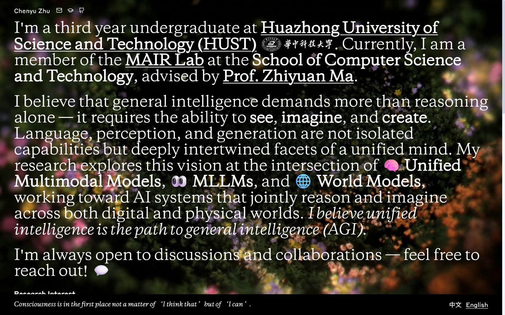
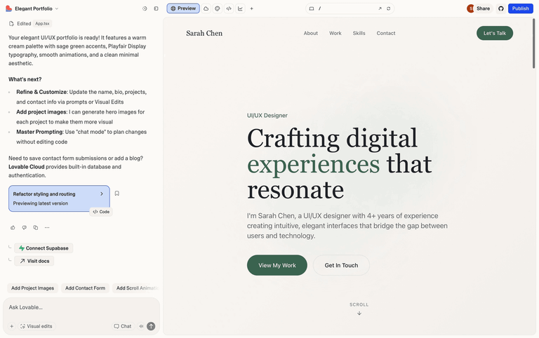
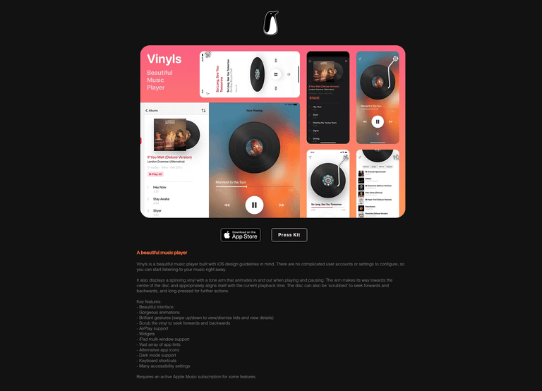
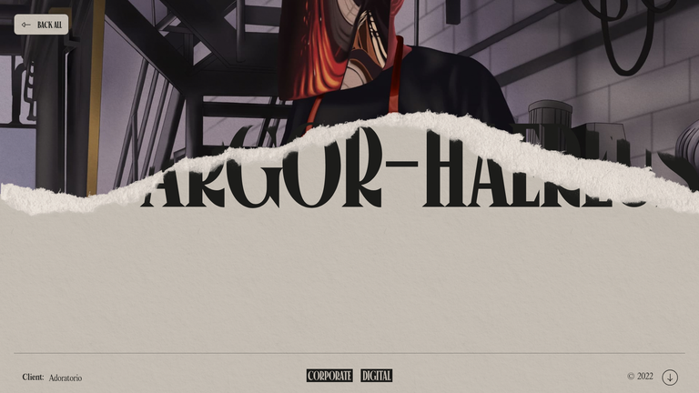

ASCII 粒子 MAIR Logo × 主页
首选“活体刊头”。把 Canvas 从全屏演示改成首屏中的互动编辑插图；保留当前视频与研究叙事，让 Logo 成为内容，而不是额外的开场特效。
Current State

三个方向
| 方案 | 新颖度 | 可行性 | 结论 |
|---|---|---|---|
| 活体刊头 | 中高 | 高 | 优先原型 |
| 黑场序章 | 高 | 中 | 第一眼冲击 |
| 粒子章节铰链 | 高 | 中高 | 全站动效语言 |
普通作品集的“显然做法”

01 活体刊头 / Living Masthead

做法：首段改成 12 栏；左侧 8 栏正文，右侧 4 栏放置 260–420px 的黑色互动 Canvas。Logo 只在指针进入时散开，移动端则放到第一段之后。
┌──────────────────────────────┬──────────────────────┐ │ I'm a third year... │ MAIR / 001 │ │ member of the MAIR Lab... │ .+#%@@%#+. │ ├──────────────────────────────┴──────────────────────┤ │ General intelligence demands more than reasoning... │ └─────────────────────────────────────────────────────┘
判断：语义位置最自然、改动最小，不会遮挡视频或正文。推荐先做。
02 黑场序章 / Research Portal

做法：首次访问出现全屏 Logo 与极小的 ENTER / SKIP；第一次鼠标移动让 Logo 从中心裂开，0.8–1.2 秒内露出现有主页。同一会话只出现一次。
.+#@ MAIR @#+.
[ ENTER RESEARCH ] SKIP
↓
existing video biography
判断：冲击力最强，但不能做成强制点击门禁；招生与合作访问者需要快速看到研究内容。
03 粒子章节铰链 / Particle Hinge

做法：在传记首屏与 Research 之间加入 30–38vh 黑色间隔；滚动时 Logo 从完整形态散开，最终排列成 01 / RESEARCH。论文详情弹层也可复用 350–500ms 的粒子展开。
│ end of biography │ ├───────────────────────────────────────────────┤ │ .+#@ MAIR @#+. → 01 / RESEARCH │ ├───────────────────────────────────────────────┤ │ Research Interest / Publications │
判断：最适合建立全站品牌动效，但需要滚动状态与触发频率控制。
Recommendation
先原型方案一；满意后再把同一组件扩展成方案三。方案二更适合作为特殊展示模式，而不是长期默认入口。